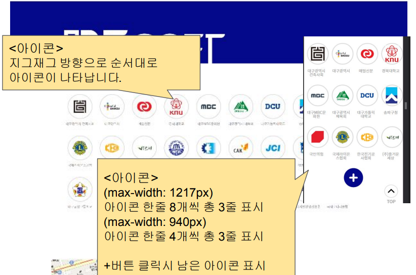
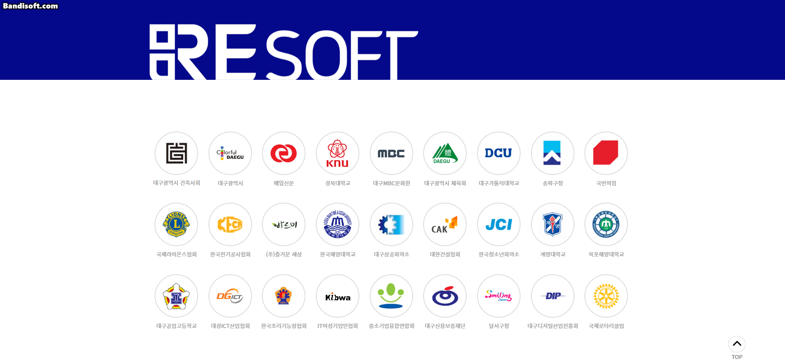
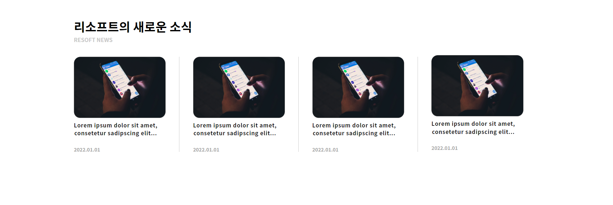
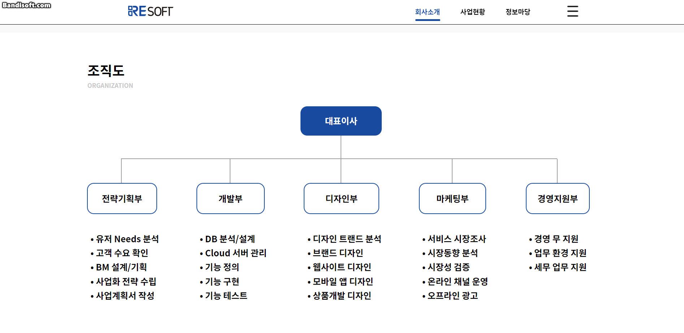
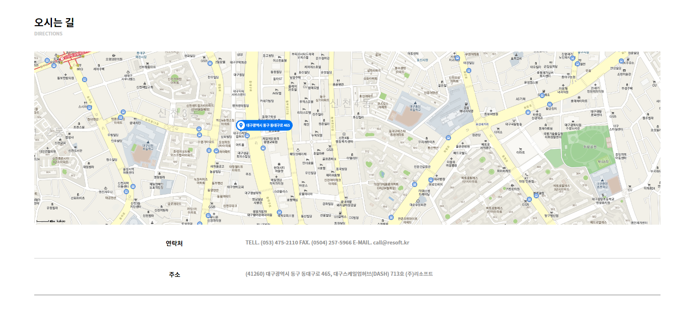

SKILL
- ☞HTML☜
- ☞CSS☜
- ☞JQUERY☜
PORTFOLIO
프로젝트 명
ai스쿨
팀 명
9직자
개발기간
1차:2022.07.01~2022.07.15 2차:2022.07.18~2022.08.12
개발 인원
1차:5명 2차:3명
주요기술
HTMl/CSS
jquery
기초 페이지 제작 및 출력,section·div등 레이아웃 나누기
애니메이션 연동,slick기능 구현,카카오 API호출
개발환경
HTMl,CSS,javascrip,jquery
본인 역할
1차:아이콘파트 완성 2차:메인 페이지 완성,회사소개 페이지 완성
- ai 스쿨 프로젝트 결과물
- 1차 프로젝트

- 담당파트 요구사항

- 구현 결과
- -팀명 : 9직자
- -개발인원 : 5명
- -개발기간 : 2022.07.01~2022.07.15
- 2차 프로젝트

- 목적
- -NAVBAR의 background color가 transparent이기 때문에 스크롤 했을 때 잘보이기 위한 기능입니다.
- 기능
- -메인로고 이미지 변경
- -텍스트 color변경
- -세브메뉴 버튼 이미지 변경

- 목적
- -버튼을 눌러 활성화/비활성화 기능입니다.
- 기능
- -버튼을 눌렀을때 서브메뉴 창이 내려옴
- -tinUp(masic.css) 애니메이션 적용

- 목적
- -이미지들을 slick기능을 적용하여 버튼을 이용하여 슬라이드를 적용하는 파트입니다.
- 기능
- -좌우 버튼을 눌러 NEXT/previous
- -start/stop버튼 으로 slick기능 제어

- 목적
- -소식의 상세정보를보기 위한 접속 파트 입니다.
- 기능
- -클릭시 상세정보 페이지로 이동

- 목적
- -서비스에 대한 정보를 보여주기 위하 파트 입니다.
- 기능
- -이미지 호버시 텍스트 변경
- -이미지 호버시 텍스트 이동하는 애니메이션 적용

- 목적
- -회사의 조직도를 보기쉽게 나타내기 위한 파트 입니다.
- 기능
- -조직도 텍스트 클릭시 애니메이션 활성화/비활성화

- 목적
- -회사의 위치를 나타내기 위한 파트 입니다.
- 기능
- -카카오 API를 이용해 지도로 나타내었다.